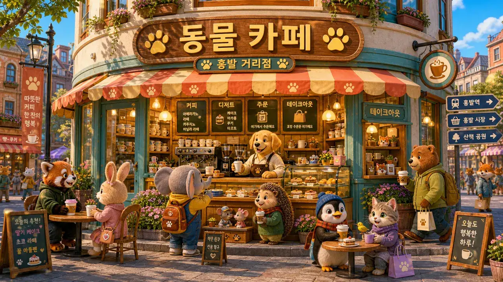
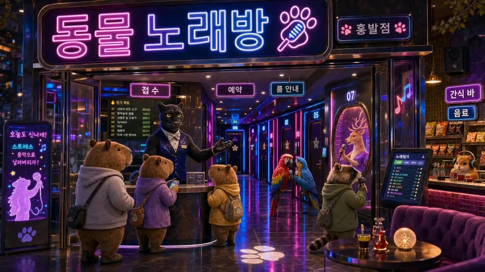

Animal City · 边逛边学
동물 도시
地图
跟着兔莉走，一路上想去哪就拐进去 🥕
📍 你现在在这里
Day 6 · 弘大的夜晚
30 天旅程 · 已走 6 天，下一站马上解锁
从这里出发
🏠
302 号宿舍 · 起点
兔莉的新家，故事从这儿开始
图书馆
📚 动物城图书馆
동물 도시 도서관
想读点真的韩语？来这儿挑一篇，点词就查。
🚩 第一章 · 첫 발자국 (Day 1–7)
教室
🎓 火鹤老师的教室
홍학 선생님의 교실
卡在语法或发音？火鹤老师一个点一个点带你。
广场
🗣️ 动物城广场
동물 도시 광장
学累了？来刷动物朋友圈，边看帖子边学地道话。
自习室

🦉 动物城自习室
동물 도시 자습실
学过的想动手练？说、写、听、打字都在这。
🚩 第二章 · 302호의 친구들 (Day 8–14)
🔒
电台

📻 动物城电台
동물 도시 라디오
Day 8 后解锁 · 边听广播边看字幕
🔒
追星
🌟 露米爪印
루미의 발자국
Day 6 后解锁 · 追 KPOP 偶像学韩语
🎓✨
Day 30 · 이야기 하나 完结
走到这里，就能推开下一段故事的门
더 많은 이야기가 곧 열려요 · 更多角落陆续开放中
这是 mockup（示意图）
，用来确认方向：
① 手绘拼贴风 —— 场景图当拍立得招牌 + 胶带 + 纸张纹理 + 虚线小路
② 日记为主线 —— 中间一条路是 30 天旅程，「你在这里」标出当前 Day，走过染粉、未到雾化
③ 6 场所沿途分布，各带专属色 + 一句「什么时候来」，锁定态雾化+🔒
真机上是竖屏卷轴，从上往下走。方向 OK 的话我再落地到 /map。